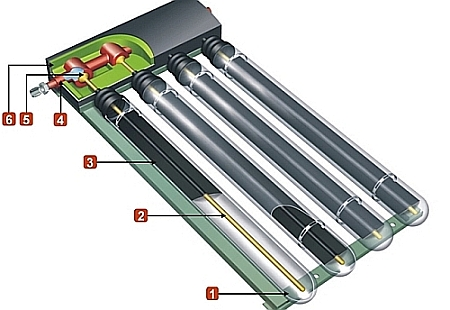
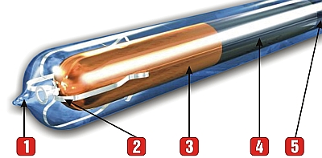

ONOSI je nová ponuka v oblasti využitia obnoviteľných zdrojov slnečnej energie. Ponúkame špičkové technológie za výhodné a dostupné ceny.
Solárne vákuové trubicové kolektory ONOSI predstavujú svetovú špičku v kvalite a vysokej účinnosti. Zohrievajú aj keď je slnko za mrakom, efektívne využívajú aj difúzne žiarenie a spĺňajú najprísnejšie normy kvality. Sú odolné vplyvom počasia, redukujú množstvo skleníkových plynov už v mnohých krajinách sveta. Napr. vo Švédsku, Taliansku, Nemecku, Veľkej Británii, Francúzsku, USA, Kanade a v mnohých ďalších.
Kolektory sú certifikované TUV a Keymark. Majú životnosť minimálne 30 rokov. Dávame Vám na ne záruku až 15 rokov.
Kolektory ONOSI pracujú na princípe tepelnej trubice "Heat Pipe", kde v rúrke absorbéra je kvapalina, ktorá sa odparuje pri nízkej teplote. Táto para stúpa v trubici až na horný koniec, na ktorom je umiestnený malý výmenník tepla. Tu para kondenzuje a nepriamo odovzdáva svoje skupenské teplo teplonosnému médiu. Nevyhnutnou podmienkou pre funkčnosť takéhoto typu kolektora je sklon minimálne 30°.
Kolektory pracujú s vyrovnanou dennou bilanciou (IAM faktor, konštrukcia absorbéra zaručuje plný výkon už skoro ráno), vysokou celoročnou účinnosťou - vysokými teplotnými ziskami hlavne v zimnom období, ktoré zabezpečuje skutočné vákuum (až so 100-násobne vyšším podtlakom ako pri najlepších podtlakových plochých kolektoroch, podtlak až 10⁻³Pa = vákuum).
Solárne vákuové trubicové kolektory pracujú s menším objemom obehového média v solárnom systéme (zníženie vstupných nákladov za teplonosnú nemrznúcu kvapalinu).
Kolektor: 1 sklenená trubica s vákuom, 2 tepelná trubica "Heat Pipe", 3 absorbér, 4 výmenník tepla (kondenzátor), 5 zberná medená rúrka teplonosnej kvapaliny, 6 tepelná izolácia
Trubica: 1 geter, 2 pružný držiak, 3 infrečervená reflexná vrstva, 4 absorpčná vrstva, 5 anti-reflexná vrstva
Naše solárne systémy sa vyznačujú špičkovou kvalitou a najčastejšie používajú na ohrev úžitkovej vody, ale je možné ich využiť prakticky na podporu akéhokoľvek ohrevu a vykurovania. V našich klimatických podmienkach je kombinácia s ďalším zdrojom vykurovania nevyhnutná, či už sa jedná o klasický plynový kotol, kotol na tuhé palivo, alebo tepelné čerpadlo. Vykurovacia voda ohriata pomocou slnečných kolektorov, sa môže využiť aj v systémoch ústredného vykurovania či centrálneho zásobovania teplom.